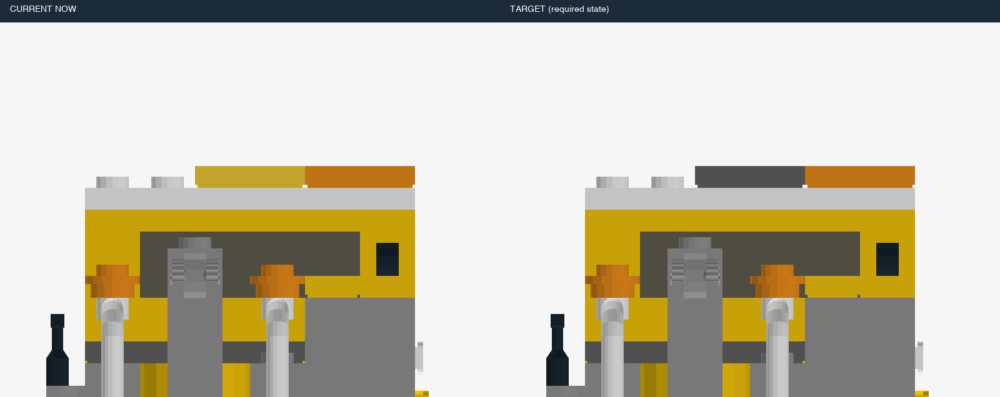
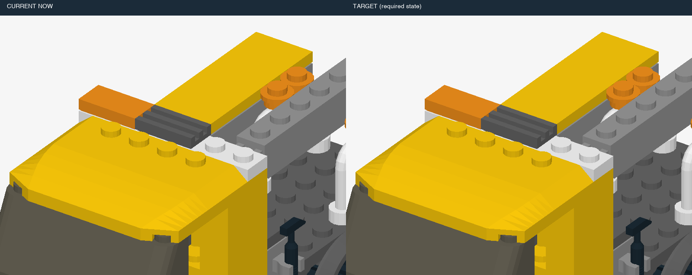
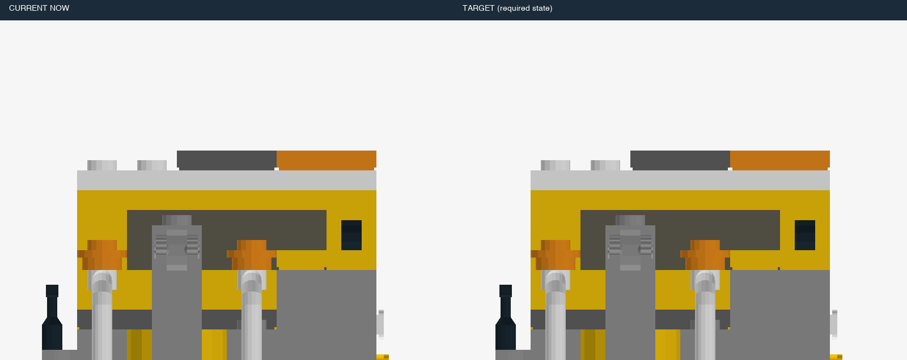
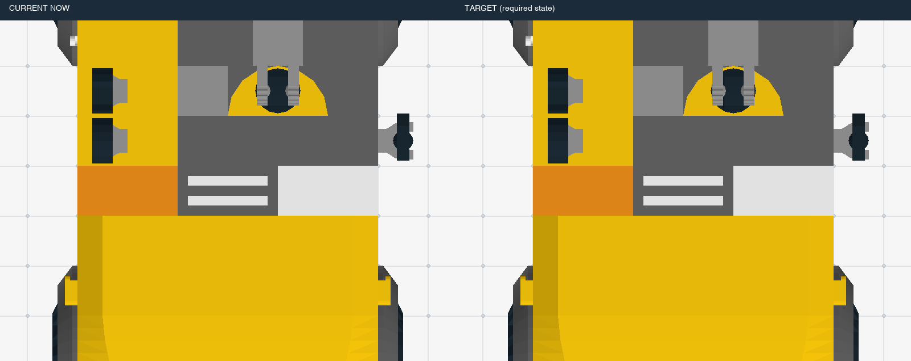
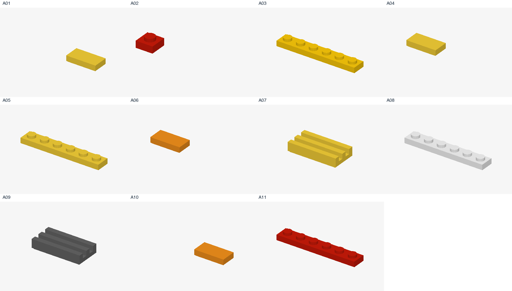

示例题：当前状态与目标有差异
这里只要求修到说明书第 4 步的状态；不需要接着把整套拼完。斜视、背面、俯视是同一个场景，不是三套积木。



这个页面展示模型输入的实际排版，不是答卷，不会调用模型。每张大图左边是当前状态，右边是本题唯一目标 TARGET。下方步骤只作参考，不替换目标。
这里只要求修到说明书第 4 步的状态；不需要接着把整套拼完。斜视、背面、俯视是同一个场景，不是三套积木。

这里只要求修到说明书第 4 步的状态；不需要接着把整套拼完。斜视、背面、俯视是同一个场景，不是三套积木。



所有零件放进总览页，每页最多十二块。没有从零件盘删掉备用件。

模型可以自己请求任何本题阶段以内的步骤。这里用一个按钮展示第 4 步的实际返回图片；一次查看只增加这一张。